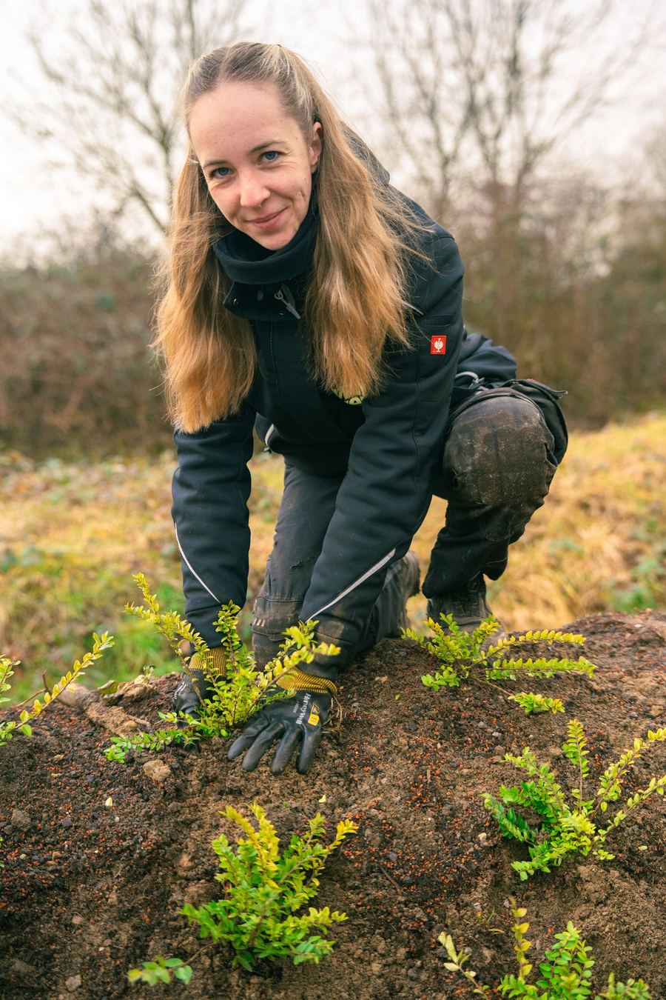
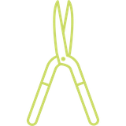
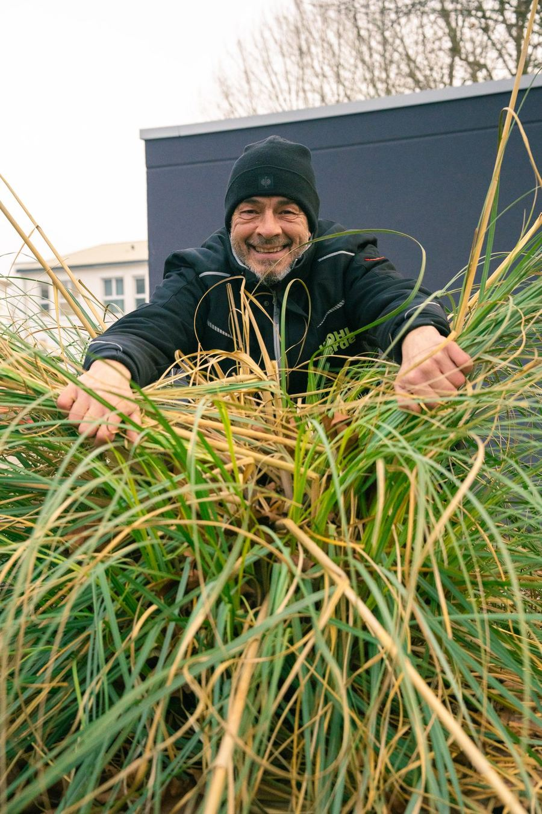

Grünpflege, die Ihr Objekt aufwertet.
Strukturierte Pflege von Außenanlagen, Industrieflächen und Bürostandorten. Saisonal geplant, sauber ausgeführt und dokumentiert, im Raum Bruchsal, Karlsruhe und Bretten.

Kurz gesagt: WOHLverde übernimmt die Garten- und Landschaftspflege für Gewerbeimmobilien, Industrieflächen, Wohnanlagen und kommunale Einrichtungen im Raum Bruchsal und Karlsruhe: Rasenpflege, Hecken- und Gehölzschnitt, Baumpflege, Unkrautbeseitigung auf Grün- und Grauflächen sowie saisonale Pflege.
Vom Rasen bis zur Baumkrone.
Ein gepflegtes Außenbild ist die Visitenkarte Ihres Unternehmens. Mit unserer Jahrespflege sieht Ihr Objekt das ganze Jahr über top aus, für Kunden, Mitarbeitende und Besucher.

Rasenpflege und Mäharbeiten
Regelmäßiges Mähen, Kantenpflege und Pflege von Rasenflächen in einem Rhythmus, der zu Ihrem Objekt passt.
Hecken- und Gehölzschnitt
Fachgerechter Rückschnitt von Hecken, Sträuchern, Gräsern und Gehölzen.
Baumpflege
Baumschnitt und Baumpflege bis hin zu Fällarbeiten, sicher ausgeführt.
Unkrautbeseitigung
Auf Grün- und Grauflächen, Pflaster und Wegen, mit umweltschonenden Methoden.
Pflanzarbeiten
Neupflanzungen und Aufwertung von Beeten und Grünflächen.
Saisonale Pflege
Frühjahrs- und Herbstpflege, inklusive Laubbeseitigung und Vorbereitung auf den Winter.

Ein Außenbild, auf das Sie sich verlassen können.
Wir planen Pflegeeinsätze nach Jahreszeit und Objekt. Feste Teams kennen Ihre Flächen, Besonderheiten werden dokumentiert.
- Feste Teams für Ihr Objekt
- Jahrespflege nach Plan
- Umweltschonende Methoden
- Kombinierbar mit Winterdienst und Hausmeisterservice
So starten wir gemeinsam.
Vom ersten Kontakt bis zur laufenden Betreuung mit festen Zuständigkeiten.
Unverbindliche Anfrage
Sie rufen an oder nutzen das Formular. Wir melden uns zeitnah und stimmen einen ersten Termin ab.
Persönliches Gespräch
Wir analysieren Ihre Anforderungen, Abläufe und die Besonderheiten Ihrer Immobilie.
Termin und Angebot
Vor-Ort-Termin mit Objektaufnahme. Danach erhalten Sie ein transparent kalkuliertes Angebot.
Zuverlässige Betreuung
Nach Ihrer Freigabe starten wir mit festem Team, klaren Prozessen und definierten Zuständigkeiten.
Welche Grünflächen pflegt WOHLverde?
Außenanlagen von Bürogebäuden, Gewerbeparks und Industrieflächen, Wohnanlagen von Hausverwaltungen sowie kommunale Flächen. Auf Anfrage auch private Gärten.
Wie oft sollte eine Rasenfläche gemäht werden?
Das hängt von Jahreszeit und Wachstum ab. In der Wachstumsphase empfehlen wir in der Regel einen wöchentlichen Rhythmus. Den passenden Plan legen wir beim Vor-Ort-Termin fest.
Wie entfernt WOHLverde Unkraut?
Wir setzen auf effektive und umweltschonende Methoden, etwa manuelle Entfernung, Mulchen und biologisch abbaubare Mittel.
Bietet WOHLverde eine Jahrespflege an?
Ja. Mit unserer Jahrespflege planen wir alle Arbeiten über das Jahr, von der Frühjahrspflege bis zum Winterdienst.
Ihr Objekt verdient einen Partner, der mitdenkt.
Erzählen Sie uns kurz, worum es geht. Wir melden uns in der Regel innerhalb eines Werktags und vereinbaren einen Vor-Ort-Termin.